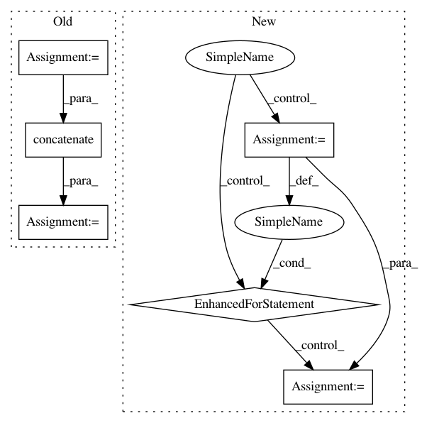

d65cddeddda46bb20f82b1e233cd5305ace7b1c7,chaospy/descriptives/conditional.py,,E_cond,#Any#Any#Any#,10
Before Change
poly = polynomials.decompose(poly)
cache = {}
if len(freeze.shape) == 1:
out = _E_cond(poly, freeze, dist, cache, **kws)
else:
out = polynomials.concatenate([
_E_cond(poly, freeze_, dist, cache, **kws)[numpy.newaxis]
for freeze_ in freeze
])
if out.isconstant():
out = out.tonumpy()
return out
After Change
return polynomials.sum(frozen, 0)
// Remove frozen coefficients, such that poly == sum(frozen*unfrozen) holds
for key in unfrozen.keys:
unfrozen[key] = unfrozen[key] != 0
return polynomials.sum(frozen*E(unfrozen, dist), 0)
In pattern: SUPERPATTERN
Frequency: 3
Non-data size: 6
Instances
Project Name: jonathf/chaospy
Commit Name: d65cddeddda46bb20f82b1e233cd5305ace7b1c7
Time: 2019-12-29
Author: jonathf@gmail.com
File Name: chaospy/descriptives/conditional.py
Class Name:
Method Name: E_cond
Project Name: SheffieldML/GPy
Commit Name: 929cf0a4890e418ecec0b000ed7fefa2372bc082
Time: 2015-09-07
Author: ibinbei@gmail.com
File Name: GPy/core/gp.py
Class Name: GP
Method Name: predict_jacobian
Project Name: NifTK/NiftyNet
Commit Name: 5af1994def9a52fe1ffd2847b2519f1e27cfbc64
Time: 2017-08-12
Author: wenqi.li@ucl.ac.uk
File Name: niftynet/io/misc_io.py
Class Name:
Method Name: do_resampling